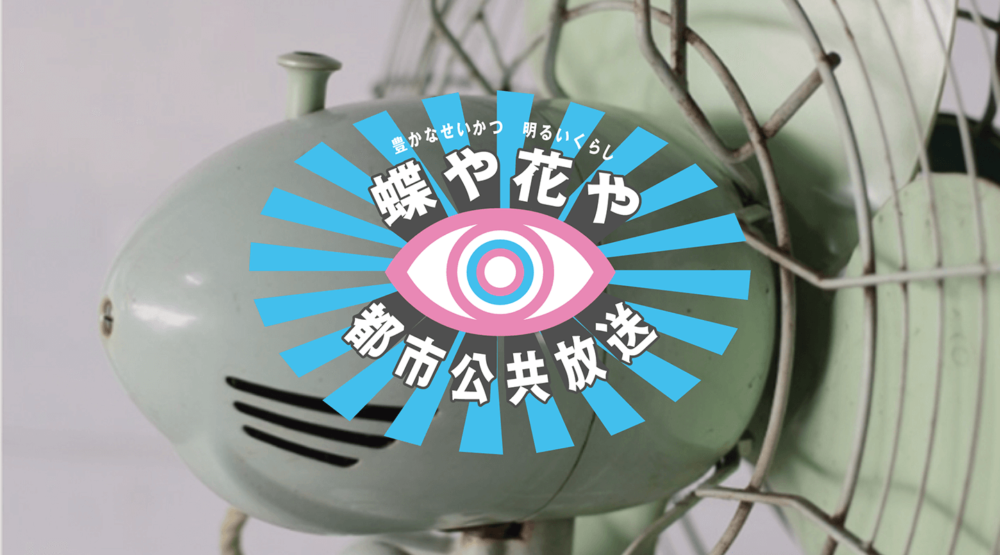
2-5蝶や花や「闇市」
木下 雄貴
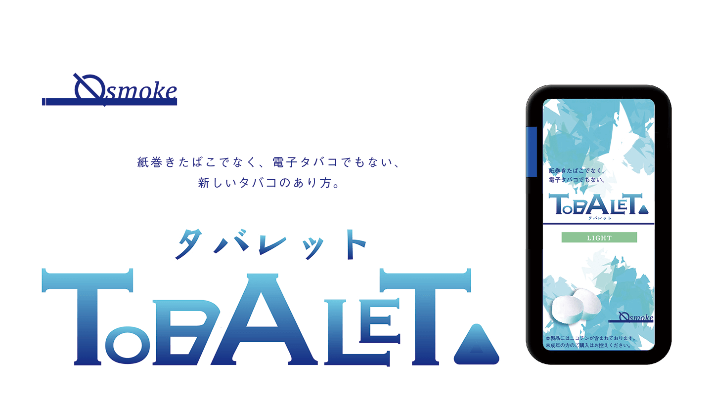
2-8TABALET－タバレット－
世良 和也
2-2バスグッズのパッケージデザインの制作
八軒 拓真
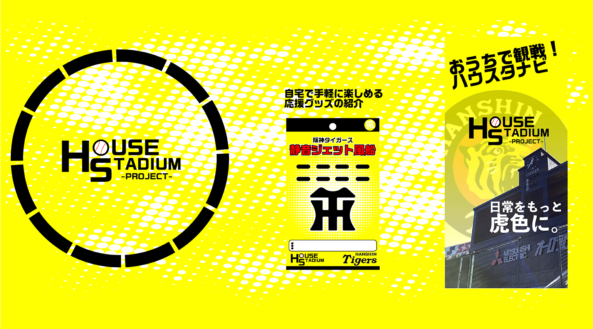
2-2ハウススタジアムプロジェクト
三村 勇翔
2-4Remlin
吉岡 良
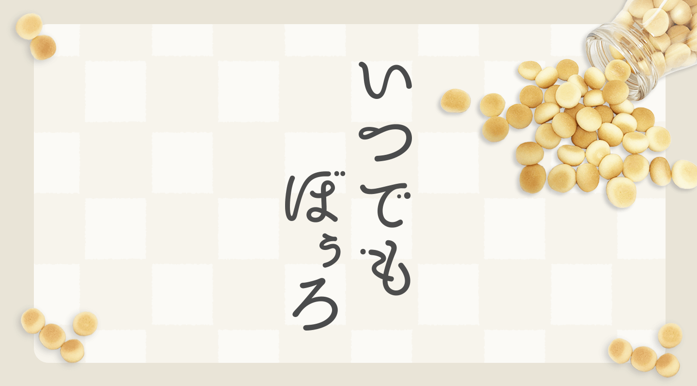
2-2いつでもぼうろ
赤松 諒子
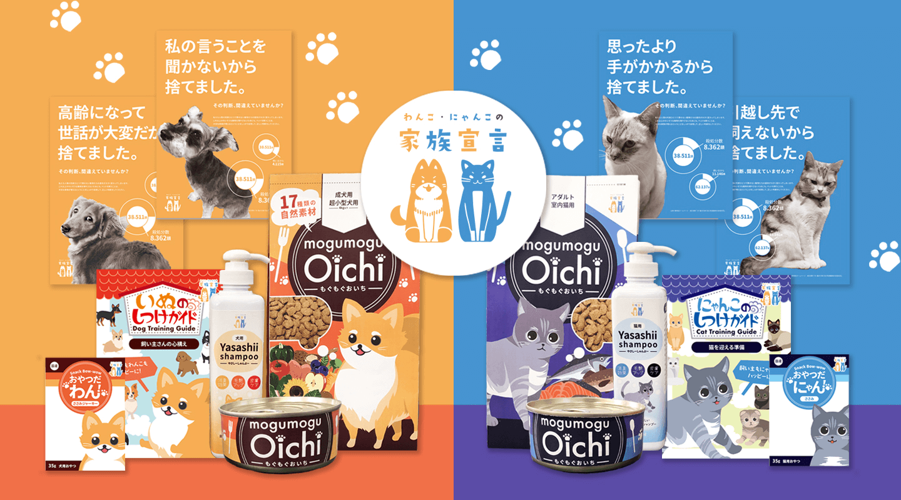
2-2わんこ・にゃんこの家族宣言
稲継 真奈
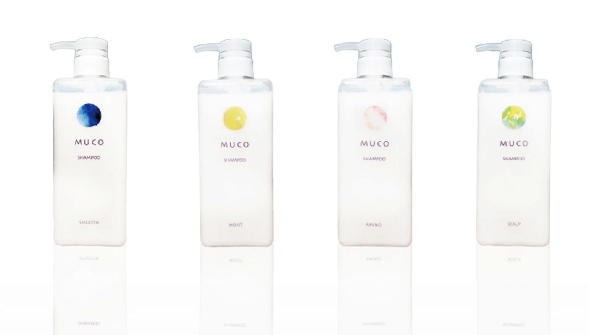
2-3MUCO
大路 絵美
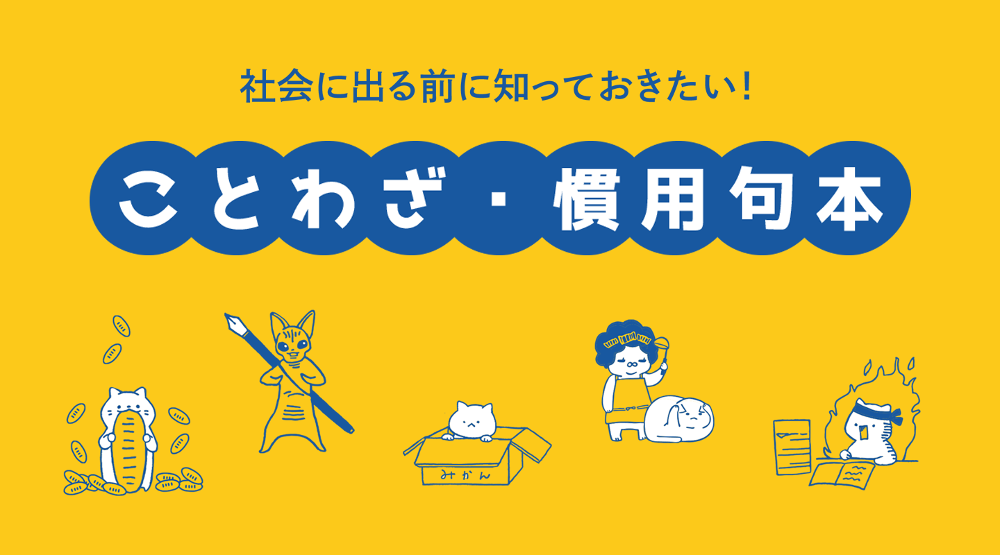
2-3慣用句・ことわざ本
大嶋 叶恵
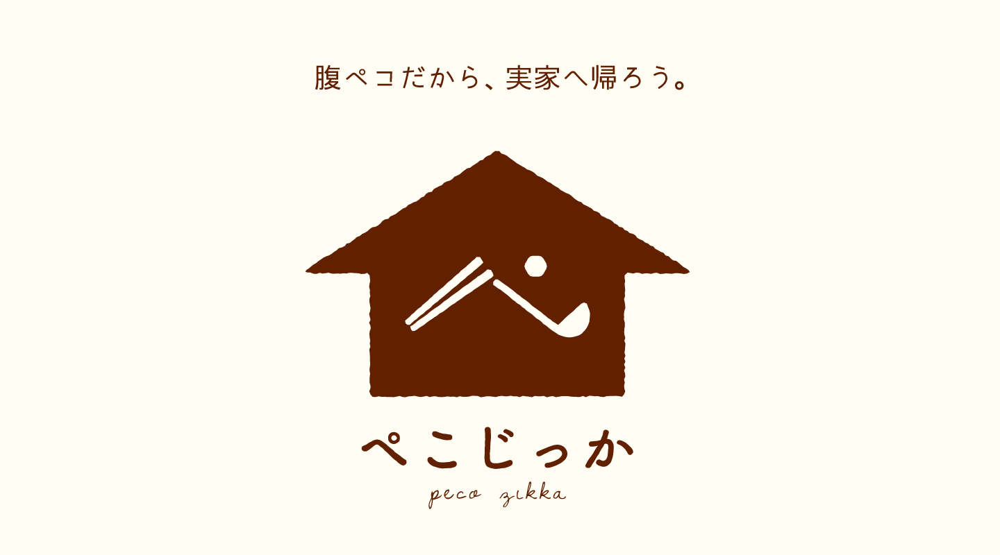
2-7ぺこじっか
清水 南那
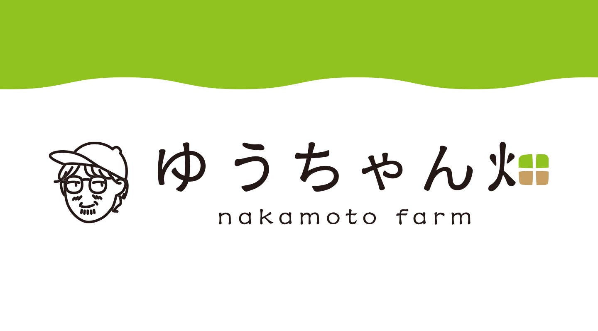
2-1ゆうちゃん畑
中本 早紀
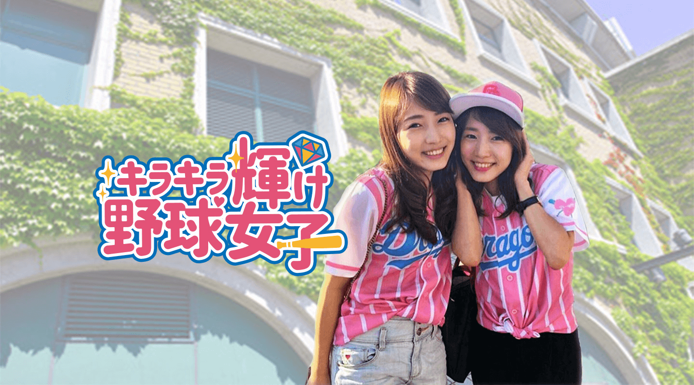
2-1キラキラ輝け野球女子
濱松 みのり
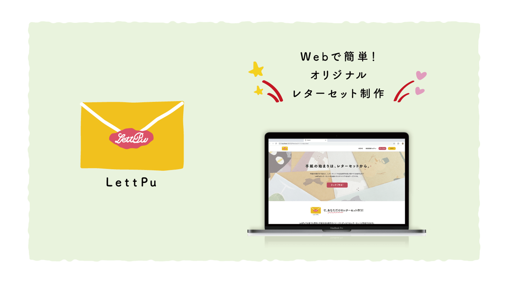
2-1LettPu
原 七海
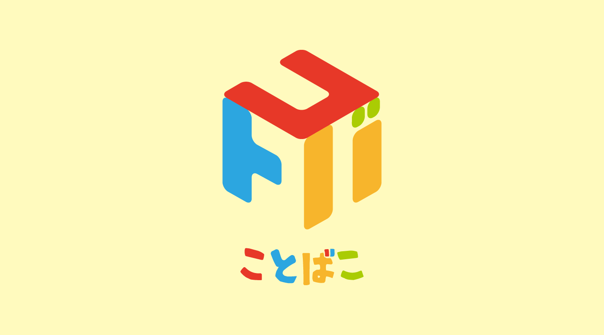
2-2ことばこ
東 友希
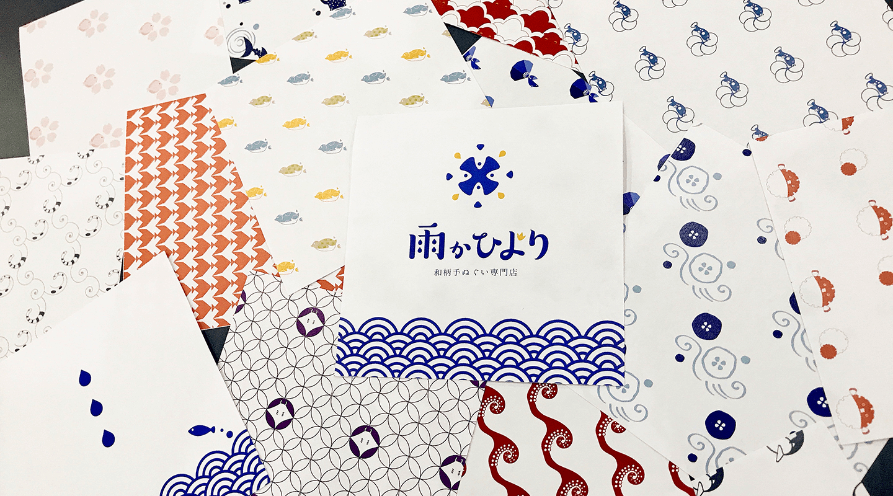
2-1雨かひより
尾藤 琴菜
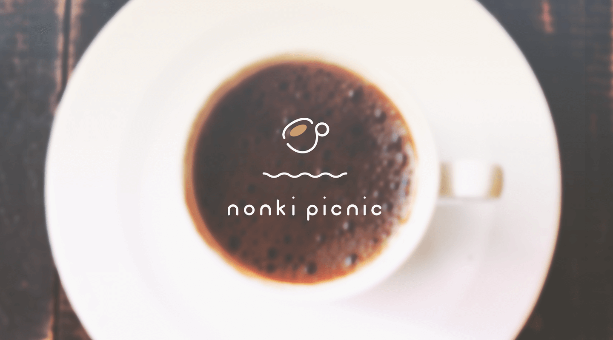
2-5nonki picnic
松浦 美優
2-3神戸屋 販促物 制作
丸田 佳奈子
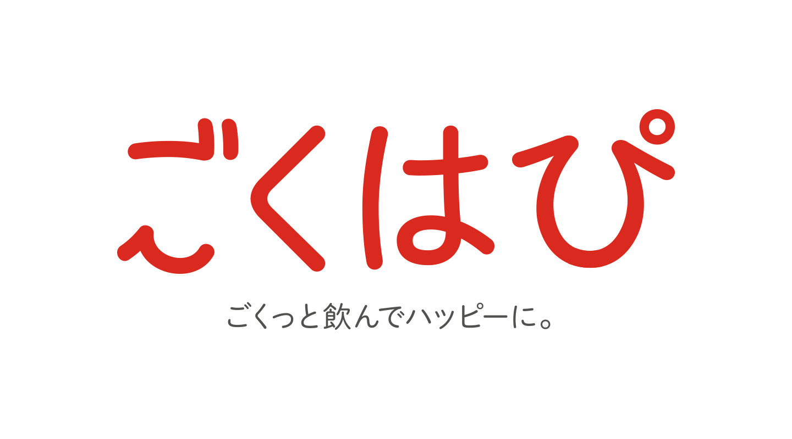
2-6ごくはぴ
山本 葵
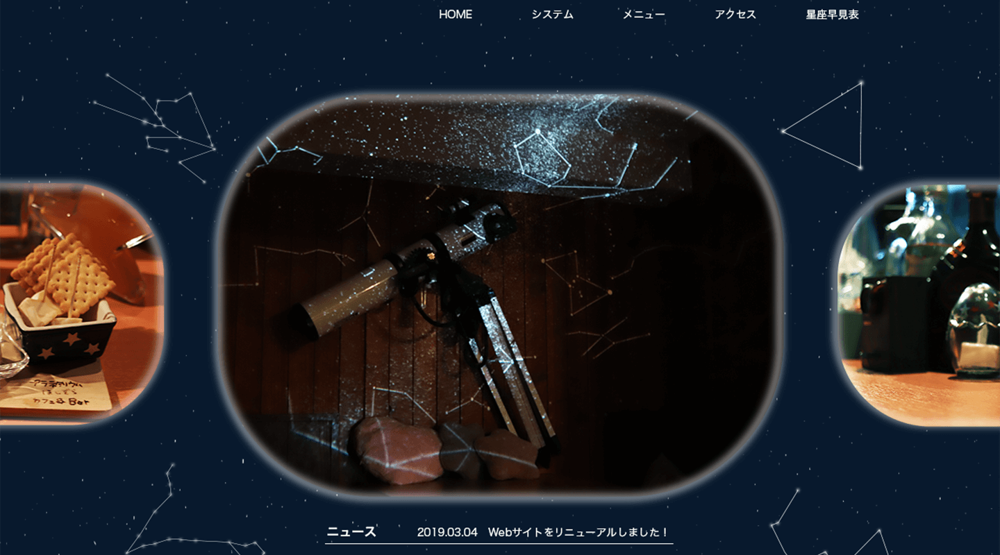
2-4ほしぞらカフェ&Bar
吉中 真里萌